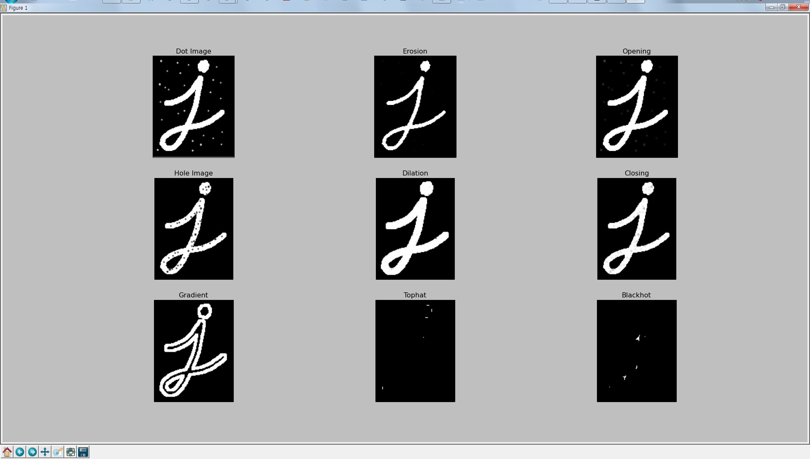

Image Pyramids¶
Goal¶
- Image Pyramid에 대해서 알 수 있다.
cv2.pyrUp()와cv2.pyrDown()에 대해서 알 수 있다.
Theory¶
일반적으로는 고정된 이미지 사이즈를 작업을 하지만, 때때로 동일한 이미지에 대해서 다양한 사이즈를 가지고 작업을 해야 하는 경우가 있습니다. 만일, 이미지에서 얼굴을 찾을 경우에 얼굴의 사이즈를 확신할 수 없습니다. 이럴 경우에는 원본 이미지에 대한 다양한 사이즈에서 얼굴을 찾는다면 좀더 정확하고 확실한 이미지를 찾을 수 있습니다. 이 처럼 동일 이미지의 서로 다른 사이즈의 set을 Image Pyramids라고 합니다(가장 아래에 가장 큰 해상도를 놓고 점점 줄여가면서 쌓아가는 형태입니다.)
Image Pyramid의 종류는 1) Gaussian Pyramids 와 2) Laplacian Pyramids 가 있습니다.
Gaussian Pyramid의 High Level(낮은 해상도. Pyramid의 상단)은 Lower level에서 row와 column을 연속적으로 제거하면서 생성됩니다. M x N 사이지의 이미지는 M/2 X N/2 가 적용되연 1/4사이즈로 줄어들게 됩니다.
Sample Code
1 2 3 4 5 6 7 8 9 10 11 12 13 14 15 16 | #-*-coding:utf-8 -*-
import cv2
img = cv2.imread('images/lena.jpg')
lower_reso = cv2.pyrDown(img) # 원본 이미지의 1/4 사이즈
higher_reso = cv2.pyrUp(img) #원본 이미지의 4배 사이즈
cv2.imshow('img', img)
cv2.imshow('lower', lower_reso)
cv2.imshow('higher', higher_reso)
cv2.waitKey(0)
cv2.destroyAllWindows()
|
Result
